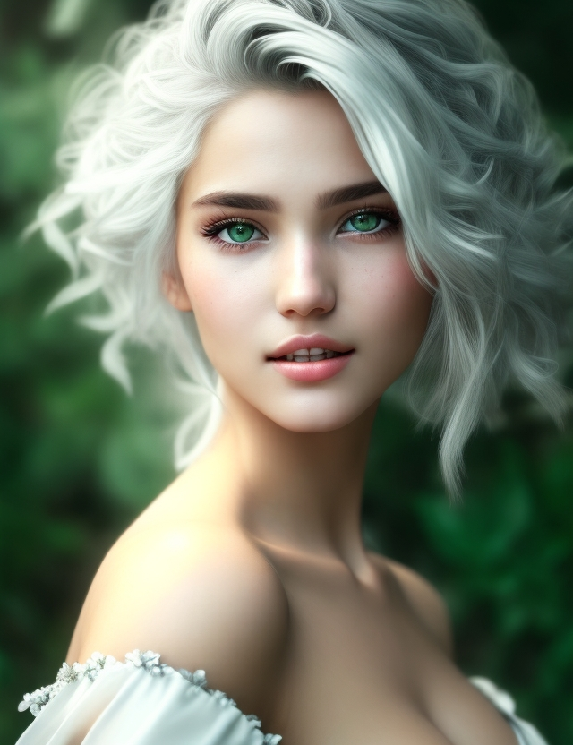
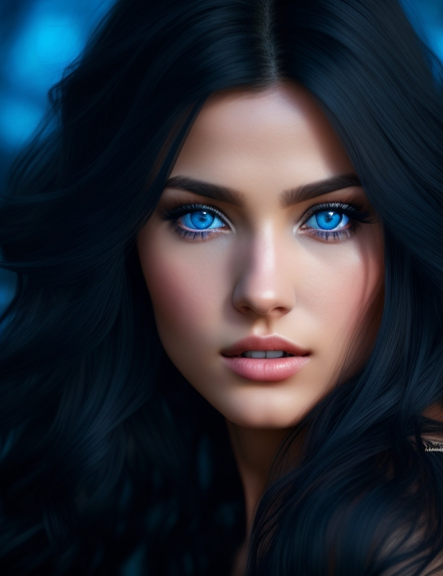
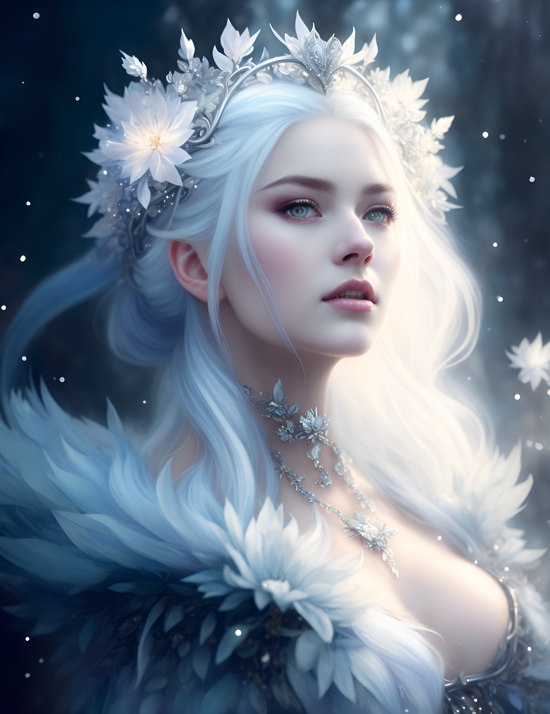

- AI画像生成の概要
- AI画像生成のメリット
- AI画像生成の使用例
①AI画像生成の概要
AI画像生成とは、人工知能（AI）を使用して画像を生成する技術です。
AI画像生成は、さまざまな用途に使用できます。たとえば、ウェブサイトやアプリのデザイン、広告の作成、写真の編集などに使用できます。
②AI画像生成のメリット
- 創造的で魅力的な画像を生成できます。
- 短時間で画像を生成できます。
- 多くのバリエーションの画像を生成できます。
③AI画像生成の使用例
ウェブサイトやアプリのデザイン
広告の作成
写真の編集
ゲームの開発
画像生成例
- 例1:
- 例2:
- 例3:
AI画像生成ができるおすすめのサイト
DALL-E 2テキストの説明から画像を生成することができます。
非常に精度の高い画像を生成することができます。
テキスト プロンプトから高品質の画像を生成する機能です。
たとえば、「猫が太陽の下で日光浴をしている画像を生成してください」と尋ねると、
Imagenは猫が太陽の下で日光浴をしている高品質の画像を生成します。
テキストと画像の両方を理解して処理できるため、テキスト プロンプトからより創造的で魅力的な画像を生成するのに役立ちます。
人間のような自然な画像を生成することができます。
従来のAI画像生成サービスよりも、より創造的でユニークな画像を生成することができます。
これは、Midjourneyがより多くのテキスト情報を処理し、より多くの可能性を探索できるため
ログインなしでテキスト入力欄に「文章」、「テキストプロンプト」を入力して、ボタンをクリックするだけで使える